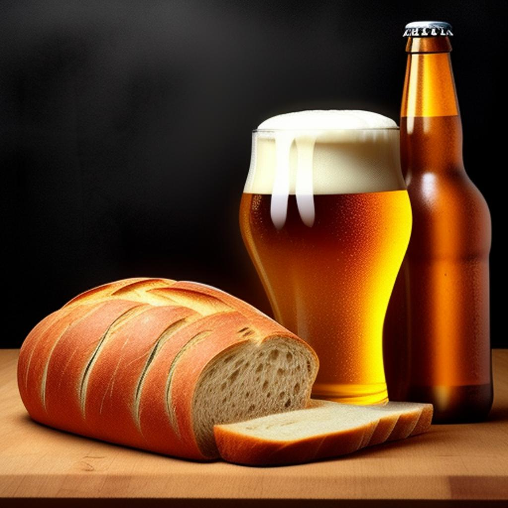
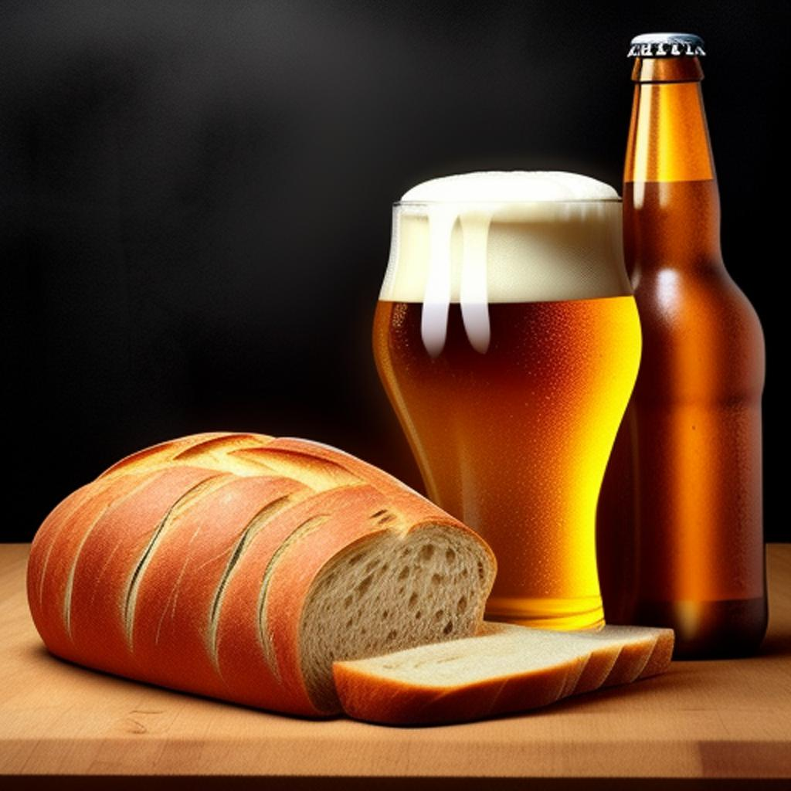

BreadConcept
Resumen Ejecutivo:BreadConcept es un proyecto innovador que busca transformar los residuos de pan en cervezas. Nos comprometemos a abordar el creciente problema del desperdicio de alimentos mientras contribuimos a la protección del medio ambiente.
Objetivo:Nuestro objetivo principal es reducir significativamente el desperdicio de pan al utilizarlo como ingrediente principal en la producción de cerveza.
Productos:Ofreceremos una variedad de cervezas, desde cerveza artesanal Blonde hasta sesión IPA, para satisfacer todos los gustos.
Conclusión:BreadConcept es más que una cerveza; es una forma de hacer un brindis por un mundo mejor. Únete a nosotros en este emocionante viaje para disfrutar de cervezas deliciosas y al mismo tiempo combatir el desperdicio de alimentos y proteger nuestro planeta. ¡Salud al futuro sostenible con BreadConcept!

Objetivo:Nuestro objetivo principal es reducir significativamente el desperdicio de pan al utilizarlo como ingrediente principal en la producción de cerveza.
Productos:Ofreceremos una variedad de cervezas, desde cerveza artesanal Blonde hasta sesión IPA, para satisfacer todos los gustos.
Conclusión:BreadConcept es más que una cerveza; es una forma de hacer un brindis por un mundo mejor. Únete a nosotros en este emocionante viaje para disfrutar de cervezas deliciosas y al mismo tiempo combatir el desperdicio de alimentos y proteger nuestro planeta. ¡Salud al futuro sostenible con BreadConcept!
